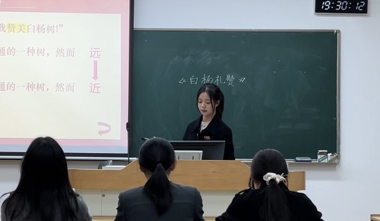
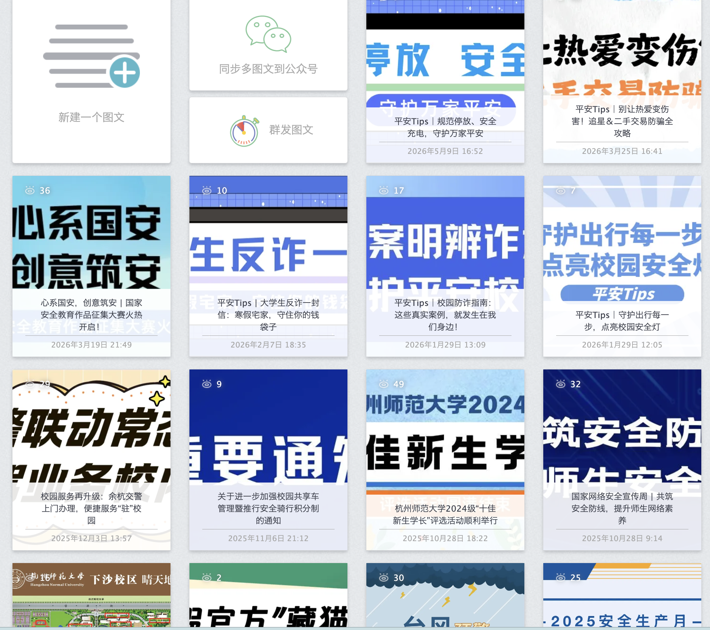

一名扎根文字，爱学习也爱折腾，拥抱新技术的探索者
学的是中文师范，却偏爱“跨界”探索。大一暑假，我在UCLA的课堂里和社会学专业的同学一起讨论亚裔歧视话题，也用镜头完成了一部15分钟的音乐短片——那是我第一次意识到，文字之外，影像和跨文化视角同样能讲好故事。
回到国内，我钻进浙江村镇，和课题组一起寻访方言使用者，用IPA记音、做语料库，想把那些正在消逝的乡音“搬”进数字博物馆。田野调查让我明白，好的内容需要俯下身去听、去录、去验证。
后来，我去了杭州日报经济部实习，跑新闻、写推文，从时令鲜蔬到时尚趋势，每一篇稿子都是一次快速学习。
现在，我在校安教融媒体中心带着30多人的团队做内容，突发推文的响应时间缩短了30%，原创稿的阅读点赞也慢慢涨了上去。排球场上我是院队的一员，生活中我滑雪、游泳、弹琴——保持好奇，保持手感，持续成长。

用图文传递美好 💫

使用135、秀米编辑器、可画、稿定设计等先后为校内外文娱、安全部门以及文广公司制作推送图文与海报。
推送图文/海报制作独立完成市民消费端新闻采、写、编、摄；为校内文娱、安全组织撰写活动策划案。
新闻稿/策划案通过可灵、即梦、nano banana辅助，优化提示词生成精美图片。
原创文学用影音展示生活 🎬
AI赋能教学微课制作，通过小组合作，用大语言模型完成前期课堂设计，以PPT为底板，即梦、豆包等AI工具制作视频动画素材，苏诺之音等创作bgm，完成10分钟微课。
优化提示词，利用Gemini创作爵士风格音乐。
我的能力值 📊
期待与您交流 📬
若有作品相关未尽疑问，请与我联系～
浙江 · 杭州
Willing09425@163.com
19011287929